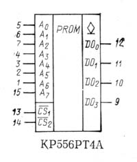
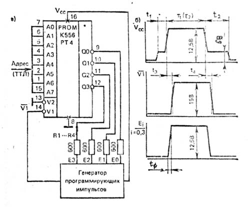
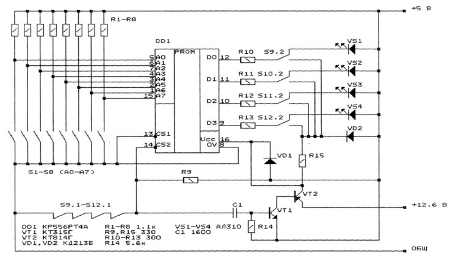
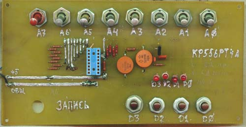
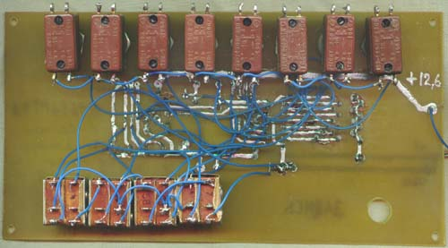

Аппаратный программатор для микросхем ПЗУ КР556РТ4А
Программатор предназначен для записи информации в микросхемы ПЗУ КР556РТ4А (предпочтительно небольшого объема или структурно несложной) без применения компьютера (набор адреса и данных вручную).
Описание и технические характеристики микросхемы ПЗУ КР556РТ4А:
Микросхема ПЗУ КР556РТ4А представляет из себя программируемое постоянное запоминающее устройство на основе ТТЛ-элементов с диодами Шоттки и обладает следующими параметрами [2, 3]:
Назначение выводов микросхемы КР556РТ4А (табл. 1):
| Выводы | Назначение | Обозначение |
| 1 ... 4, 5 ... 7, 15 | Адресные входы | A6 ... A3, A0 ... A2, A7 |
| 9 ... 12 | Выход данных | DO3 ... DO0 |
| 13, 14 | Выбор микросхемы | -CS1, -CS2 |
| 16 | Напряжение питания | Ucc |
| 8 | Общий | 0 В |

Таблица истинности микросхем КР556РТ4А (табл. 2):
| -CS1 | -CS2 | A0 - A7 | DO3 - DO0 | Режим работы |
| M | M | X | 1 | Хранение (невыбор) |
| 0 | 0 | A | Данные в прямом коде | Считывание |
M - любая комбинация сигналов -CS1, -CS2,
кроме 00.
X - безразличный уровень сигнала.
Методика программирования микросхемы КР556РТ4А [3]:
Для записи информации в микросхему на ряд ее выводов подаются импульсы напряжения определенной амплитуды и длительности (рис. 1).

Рис. 1. Схема подключения ПЗУ КР556РТ4А в режиме записи информации (а), временные диаграммы (б) (нумерация и обозначения выводов адреса и данных не соответствует справочным данным, хотя сущность разъяснений по программированию от этого не меняется).
До программирования по всем адресам и разрядам в микросхеме содержится состояние "Лог. 0". В каждом цикле программируется только один разряд выбранного слова (побитное программирование). В исходном состоянии напряжение на выводах 13, 14 и 16 равно нулю. Запись бита информации производится в следующем порядке:
Перечисленные операции повторяют для всех программируемых разрядов слова. После окончания записи слова обычно производят его контроль, для чего напряжение питания устанавливают равным 5 В и выполняют цикл считывания и проверки правильности записи. Допускается контролировать информацию после записи каждого бита. При обнаружении ошибок цикл записи следует повторить. Для предотвращения зависания тугоплавких перемычек во время программирования число повторных попыток ограничивается. В зависимости от длительности импульса напряжения питания t и числа допустимых попыток N различают три режима программирования ИС: нормальный (t1, N1), форсированный (t2, N2) и дополнительный (t1, N3) (табл. 3):
| Длительность импульсов программирования, мкс (мс) | 25 <= t1 <= 100 (10 <= t2 <= 15) |
| Число импульсов программирования на один бит | 1000 <= N1 <= 4000 N2 = 100 40 <= N3 <= 100 |
| Скважность программирующих импульсов | 10 <= Q <= 20 |
| Время предустановки напряжения питания при контроле, мкс | 200 нс <= t1 <= 10 мкс |
| Время воздействия напряжения питания при контрле, мкс | 1 < t2 <= 30 |
| Время задержки подачи импульсов на входе разрешения выборки (-V1), нс | 0 <= t3 <= 100 |
| Время задержки снятия импульсов на входе разрешения выборки (-V1), нс | 200 <= t4 <= 1000 |
| Длительность фронта и спада импульса, нс | 300 <= tф <= 500 |
Программирование слова начинают в нормальном режиме. Если нормальный режим не обеспечил правильную запись информации, то переходят к форсированному режиму. В случае неудачи и в этом режиме микросхема считается негодной. При первом успешном прохождении операции контроля, независимо от того, в нормальном или форсированном режимах программирования он был получен, необходимо перейти в дополнительный режим. Программирование следующего слова начинают после успешного выполнения всего дополнительного режима. При обнаружении ошибки контроля в дополнительном режиме (восстановление перемычки) делается повторная попытка записи информации. Микросхемы с записанной информацией рекомендуется подвергать электротермотренировке со считыванием информации с частотой 50 Гц ... 1 МГц последовательно по всем адресам микросхемы. Электротермотренировка проводится в течение 168 ч при температуре среды +70 oC. Микросхемы, у которых в процессе тренировки произошла потеря записанной информации, допускается программировать один раз повторно.
Аппаратный программатор микросхем ПЗУ КР556РТ4А:
В соответствии с вышеизложенной методикой, которая подверглась существенному упрощению, сконструировано устройство для программирования микросхем КР556РТ4А без применения компьютера с ручным набором адреса и данных. Схема программатора приведена на рис. 2.

Рис. 2. Схема принципиальная аппаратного программатора микросхем ПЗУ КР556РТ4А.
Для питания программатора используются два внешних источника: +5 В 200 мА, +12.6 В 500 мА. Адресные входы A0 - A7 микросхемы ПЗУ DD1 подключаются через резисторы R1 - R8 к источнику питания +5 В. Для задания адреса служат тумблеры S1 - S8. Когда тумблер разомкнут, на линию адреса поступает логическая единица. При замыкании тумблера на соответствующий адресный вход подается логический ноль. Для контроля состояния выходных данных служат светодиодные индикаторы VS1 - VS4, подключаемые к шине данных через нормально замкнутые контакты кнопок S9 - S12. Когда индикатор горит, значение соответствующего бита данных равно логическому нулю (исходное состояние для незапрограммированной микросхемы ПЗУ). При нажатии одной из кнопок S9 - S12 происходит подача необходимых импульсных сигналов на входы микросхемы ПЗУ. После отпускания кнопки устройство возвращается в режим контроля. Если соответствующий индикатор погас, то программирование бита данных (в состояние "логическая единица") по заданному адресу произошло успешно. Если индикатор продолжает гореть, то процедуру программирования данного бита следует повторить. Для заданного адреса A0 - A7 производится побитное программирование поочередным нажатием кнопок S9 - S12: если заданный бит необходимо перевести в состояние логической единицы, то нажимается соответствующая кнопка; если значение бита должно быть равно нулю, то его программировать не нужно. И так производится перебор всех адресов (всего 256). Для удобства лучше начинать с нулевого адреса. Внешний вид программатора показан на рис. 3 и 4. В таблице 4 приведено соответствие между десятичной, шестнадцатиричной и двоичной системами счисления.

Рис. 3. Аппаратный программатор микросхем ПЗУ КР556РТ4А (вид сверху).

Рис. 4. Аппаратный программатор микросхем ПЗУ КР556РТ4А (вид снизу).
Соответстие между десятичной, шестнадцатиричной и двоичной системами счисления (табл. 4):
| Десятичная | 0 | 1 | 2 | 3 | 4 | 5 | 6 | 7 | 8 | 9 | 10 | 11 | 12 | 13 | 14 | 15 |
| Шестнадцатиричная | 0 | 1 | 2 | 3 | 4 | 5 | 6 | 7 | 8 | 9 | A | B | C | D | E | F |
| Двоичная | 0000 | 0001 | 0010 | 0011 | 0100 | 0101 | 0110 | 0111 | 1000 | 1001 | 1010 | 1011 | 1100 | 1101 | 1110 | 1111 |
Ссылки:
28.01.2004
23.01.2006
21.06.2010
Альтернативные источники
энергии
Компьютеры и
Интернет
Магнитные поля
Механотронные системы
Перспективные
разработки
Электроника и технология